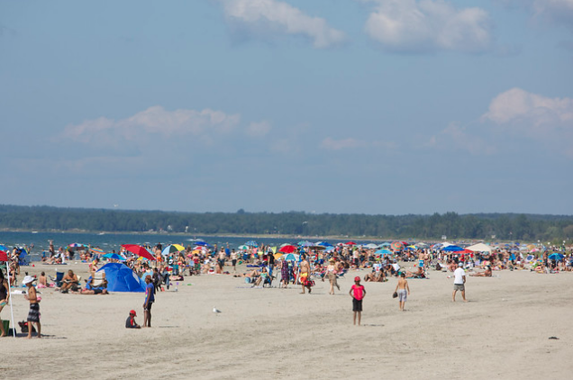

不久前，一位居民在社交媒体上发布的一段视频引起了人们的关注和讨论，视频显示有人在安省一处著名的沙滩上排便。而当地小镇的市长极力反驳，并表示小镇的声誉正受到“严重损害”。他还喊话省长福特要介入。

据globalnews报道，安省Town of Wasaga Beach小镇市长Brian Smith最近呼吁省长福特来收拾残局。
上个月，一名 TikTok用户发布了一段有人在沙滩上排便的视频，声称这是多年来一直存在的问题。该视频后来在网上疯传。
Smith在周一的一次特别议会会议上表示，“由于市民和游客对Wasaga Beach省立公园的护理质量和缺乏护理的担忧，Town of Wasaga Beach小镇的声誉正受到严重损害。”
“让我感到沮丧的是，这是我们的社区，这是一个了不起的社区。……当这个省、这个国家到处都在关闭沙滩时，Wasaga Beach沙滩仍然开放——而且安全、干净。
市议员：”管理海滩公园是安省政府的责任”
对于这段视频中所指出的问题，Smith上个月发表了一份长篇声明，谴责这些帖子是“缺乏证据和传播错误信息的投诉”。
“小镇没有收到任何证据——无论是来自居民、游客还是安省政府——来证实Wasaga Beach省立公园的所有海滩区域发生了任何不良、不卫生的行为，” 他说。
“如果有任何证据曝光，我向你们保证，我们会迅速采取行动。”
然而市长的声明让一些人感到不快，因为在Facebook群组上的几条评论在不久之后继续重申这件事。
发布视频的TikTok用户Natty Lynn在7月9日的视频中声称，Wasaga Beach省立公园多年来一直存在排便问题，人们正在搭建小帐篷并挖洞用作洗手间。在那段视频中，她说，她已经不让她的孩子在1号海滩挖沙子。
“市长不能否认我们所有人都有过这样的经历，” Lynn在上个月的一封电子邮件中表示，她要求使用她的社交媒体用户名。
“如果你浏览我的社交媒体评论，你会看到很多人说，这种事情几乎发生在安省、加拿大各地的每个海滩。这不是一个新问题。”
虽然安省的环境、保护和公园厅与安省公园管理部门一同负责Wasaga Beach省立公园，但该小镇官员表示，他们一直承受着投诉的冲击。
“很多社交媒体的关注和负面情绪……都被误导和误导到了Wasaga Beach小镇和居民身上，说这里的领导和人民什么也没做，” 该小镇市议员Richard White在周一的会议上说。
“管理这个省立公园是省政府的责任，我们今天站出来表示，我们需要更多的关注。”
市长喊话：福特要介入“是时候了（it’s high time）”
环境厅发言人上个月表示，Wasaga Beach省立公园工作人员“在定期巡逻海滨或回应任何投诉时没有发现这种行为。”
另一位环境厅发言人表示，工作人员“自 2020 年以来偶尔收到有关海滩上排便或小便的投诉，但没有发现这些指控的具体证据。”
对于2020 年以来，在沙滩上公开排便或小便是否曾成为Wasaga Beach沙滩的问题时，该小镇发言人说“没有”。

在周一的会议上，市长Smith提出一项动议，希望与福特和几位厅长会面，并要求省府帮助制定省级规则，禁止在沙滩上搭帐篷，这与该省禁止在镇属沙滩土地上建造临时建筑的规则如出一辙。
Smith的动议还呼吁安省政府更好地投资Wasaga Beach省立公园，以改善垃圾收集和建筑物维修。他还希望有更多的省级公园管理员来执行规则和法规，并对违反这些规则的人处以更严厉的罚款。
“我对省府怀有充分的敬意，因为我知道我们在地方层面面临的挑战，我也知道省府面临的挑战……但现在是省政府采取行动的时候了，”他说。
“他们建造这个省级公园是为了成为这个省（和）这个国家的游乐场和休闲公园。当他们这样做的时候，它是一个非常美丽、原始的公园。”
Smith的动议获得了小镇市议会的一致通过。截至发稿时，省长办公室尚未就此事做出回复。